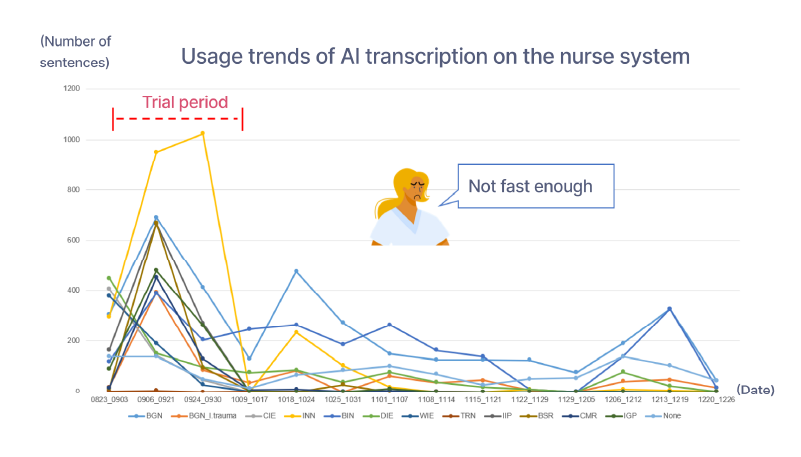
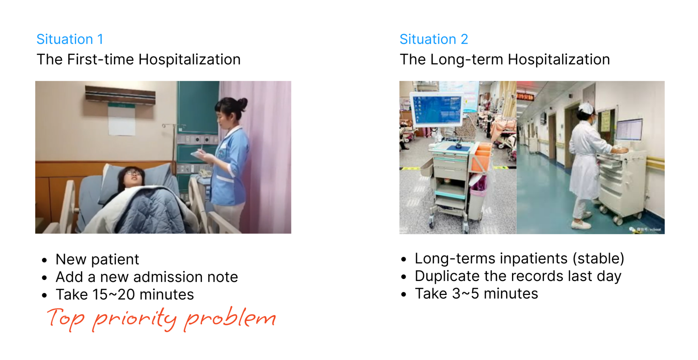
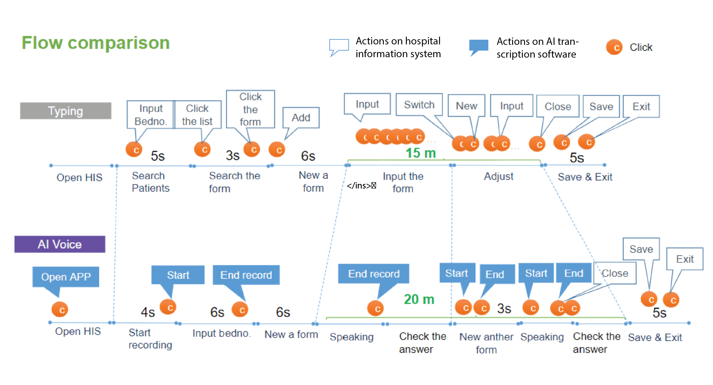
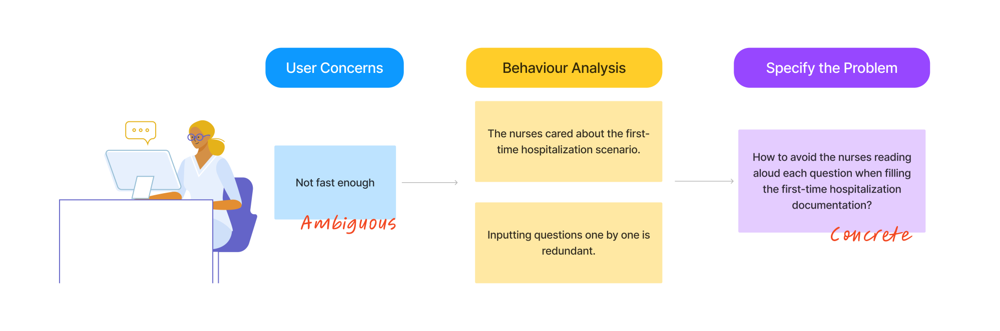
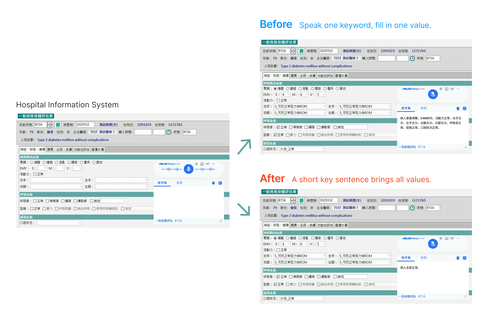

Story begins- A Declining Usage
A Taiwanese hospital used our medical AI transcription software embedded in their HIS (Hospital Information System) to improve nursing documentation efficiency. After a one-month trial, the usage showed a significant decrease. The nurses conveyed that speech recognition did not prove to be faster than traditional typing. However, the recognition rate reached 90%, so we suspected there were other underlying factors causing the decline.
What's the Problem?
Though our nurses complainted that the new system didn’t improve their work efficiency, it was still too ambiguous to detect what the problem was. Thus, I adopted three steps to specify the problem.
Clasify painpoints and proritize scenarios
By interviewing the nurses remotely, I found patients hospitalized for the first time requires the nurses three times of time to finish the medical documentation. Therefore, the nursing director and I agreed on setting situation one(first-time hospitalization) as the main target.
Behavior analysis
Limited by Covid 19, I made a plan for remote troubleshooting - 2 days collecting bug logs and screen recording from the hospital system, 1 days video analysis, and 2 days voice recognition bug analysis.
From users' video recording logs, I analyzed the data with Excel, finding that the nurses had to speak a lot for filling in entries - about 8~10 words for 1 question on the admission note. This caused them burden, let alone to repeating words if there was any mistake.
Additionally, I analyzed the screen recording of how nurses used our AI software, and visualized them into a step-by-step process chart. The chart(see below) indicates that the overall process of activating voice recognition and finishing one entry involved multiple clicking, which made no significant improvement in terms of efficiency.
Redefine Problems
Through user interview and behavior analysis, I can summarize the main problem - nurses had to say a lot for entering the admission note correctly and completely. Thus, I concluded the main goal for our team - How to fill in the admission note without reading aloud questions by questions?
Solution Brainstorming
To make sure all the stakeholders on the same page, I coordinated opinions from nurses, hospital IT staff, engineers in our team, to develope an optimized solution - using shorten key sentences. By collecting common sentences that nurses were used to speak, I listed lingusitc patterns for engineers in my team to retrain the AI model. The updated version supported shorter commands for entering the medical record.
Customer Feedback
After one-month of redesign and development, we released the new version. The nurses said the new design fit in their clinical work habits much more than the previous version. , doubling the efficiency of medical transcription. Some nurses reflected that they started to experience the benefits of voice recognition and looked forward to more applicaiton in other nursing documentation.
Reflection
From this project, I know more about the workflow of nurse documentation. Nurses care about efficiency. As a result, when designing the AI medical transcription, I realized it is essential to be simple.
The AI tool should be well-integrated with their existing HIS, and the number of voice-recognition commands should be less than three types. Otherwise, the overall documentation efficiency will not surpass the typing.
Since the product is still in the trial period, rapid testing and feedback are crucial. This time, video recording analysis helped me discover the underlying problem efficiently. However, though screen recording is a time-saving alternative for behavior analysis, I prefer visiting the hospital in-person, since it is easier to clarify problems in a more comprehensive way.